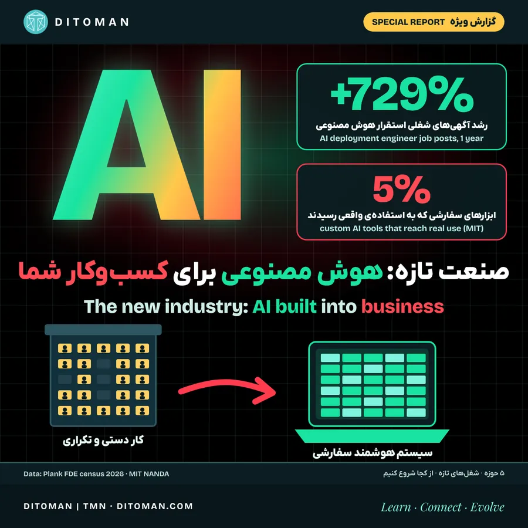

صنعت تازه: ساختن هوش مصنوعی برای کسبوکارها
The new industry: building AI into business
What AI turns into what in five fields, why AI system builders are becoming an industry, and where an Iranian business owner can start.
هوش مصنوعی در پنج حوزه چه چیزی را به چه تبدیل میکند، چرا سیستمسازهای هوش مصنوعی به یک صنعت تبدیل میشوند و یک تاجر یا کارخانهدار ایرانی از کجا شروع کند.
آگهیهای شغلی «مهندس استقرار هوش مصنوعی»، یعنی کسی که هوش مصنوعی را داخل یک شرکت واقعی پیاده میکند، در یک سال ۷۲۹٪ بیشتر شده است Plank.
همزمان، طبق پژوهش MIT فقط حدود ۵٪ ابزارهای هوش مصنوعی سفارشی شرکتها به مرحلهی استفادهی واقعی میرسند MIT.
این دو عدد کنار هم یک چیز را میگویند: هوش مصنوعی خودبهخود کار نمیکند. کسی باید آن را برای هر کسبوکار طراحی کند، به کار بیندازد و پای نتیجهاش بایستد. همین کار دارد به یک صنعت تازه تبدیل میشود. در این گزارش با هم دنبال میکنیم هوش مصنوعی در پنج حوزه چه چیزی را به چه چیزی تبدیل میکند، این صنعت تازه چطور شکل میگیرد و یک تاجر یا کارخانهدار ایرانی از کجا میتواند شروع کند.
۰۱. نقطهی شروع: یک پیشبینی جنجالی
ایلان ماسک گفته شرکتهایی که فقط از هوش مصنوعی و ربات تشکیل شدهاند، از هر شرکتی که انسان در چرخهی کارش دارد بسیار جلو میزنند OfficeChai. مثالش این است: روزی «محاسبهگر» شغل آدمها بود و حالا یک جدول اکسل کار یک ساختمان پر از کارمند را میکند. ماسک خودش سازندهی هوش مصنوعی و ربات است و این پیشبینی را باید از زبان یک طرف ذینفع شنید. ولی یک بخش آن را داده تأیید میکند: پژوهش INSEAD و هاروارد (ژوئن ۲۰۲۶) نشان داد استارتاپهایی که از اول بر پایهی هوش مصنوعی ساخته شدهاند حدود ۲۵٪ کارمند کمتر دارند و ارزشگذاریشان مشابه بقیه است. شرکتها بیآدم نشدهاند، کوچکتر و چابکتر شدهاند.
۰۲. پنج حوزه، پنج تبدیل
برای اینکه موضوع ملموس شود، پنج جای آشنا را کنار هم میگذاریم: امروز کار چطور انجام میشود و با هوش مصنوعی به چه تبدیل میشود.
| حوزه | امروز | با هوش مصنوعی |
|---|---|---|
| خدمات مشتری | تلفنخانه و اپراتورهایی که به سؤالهای تکراری جواب میدهند | دستیاری که شبانهروز به بیشتر سؤالها جواب میدهد و فقط مورد پیچیده را به آدم میسپارد |
| کارخانه | کارگری که قطعه را با چشم کنترل میکند؛ تعمیر دستگاه وقتی خراب شد | دوربین و مدل بینایی که عیب را روی خط تولید میبیند؛ حسگری که خرابی را پیش از وقوع خبر میدهد |
| حسابداری و اداری | واردکردن دستی فاکتور، تطبیق حساب، پیگیری چک و پرداخت | سیستمی که فاکتور را میخواند، ثبت میکند و فقط مغایرت را نشان میدهد |
| بازرگانی و واردات | مکاتبه و ترجمه با تأمینکنندهی خارجی؛ چککردن پیشفاکتور، لیست بستهبندی و اسناد حمل | ترجمه و نامهنگاری فوری؛ مقایسهی خودکار اسناد و هشدار دربارهی هر اختلاف وزن، تعداد یا قیمت |
| فروش و فروشگاه | جوابدادن دستی به دایرکتها، نوشتن توضیح محصول، عکاسی و تبلیغ | دستیار فروشی که به پیامها جواب میدهد، کاتالوگ را بهروز میکند و محتوای تبلیغ میسازد |
هیچکدام از اینها خیال نیست؛ همه همین حالا در شرکتهای مختلف دنیا کار میکنند. ولی بین «کار میکند» و «برای شرکت من کار میکند» فاصلهی زیادی هست.
۰۳. یک نمونهی واقعی: کلارنا
شرکت پرداخت سوئدی کلارنا در ۲۰۲۴ دستیار هوش مصنوعی را جای بخش بزرگی از پشتیبانی گذاشت. تا پایان ۲۰۲۵ این دستیار کار معادل ۸۵۳ نیروی تماموقت را میکرد، دوسوم پرسشها را جواب میداد، زمان پاسخ را ۸۲٪ کوتاه کرده بود و حدود ۶۰ میلیون دلار صرفهجویی داشت Klarna.
ولی در مه ۲۰۲۵ کلارنا دوباره نیروی انسانی استخدام کرد. مشتریها از جوابهای کلی و ناتوانی در مسئلههای پیچیده گله داشتند و مدیرعامل گفت مشتری باید همیشه بتواند با یک آدم حرف بزند. درس این نمونه: سیستم خوب آن است که میداند کجا کار را به انسان بسپارد.
۰۴. صنعت تازه: سیستمسازهای هوش مصنوعی
همانطور که با آمدن کامپیوتر شرکتهای نرمافزار و شبکه به وجود آمدند، حالا شرکتهایی شکل میگیرند که کارشان طراحی و پیادهکردن سیستم هوش مصنوعی برای کسبوکارهای دیگر است. نشانهها:
- آگهیهای شغلی «مهندس استقرار» در یک سال ۷۲۹٪ رشد کرد. در پایان اکتبر ۲۰۲۶ بیش از ۱٬۲۷۶ موقعیت باز در ۵۴۷ شرکت وجود داشت و میانهی حقوق اعلامشده ۱۶۵ تا ۲۴۰ هزار دلار در سال بود Plank.
- بخش استقرار پالانتیر در سهماههی دوم ۲۰۲۶ نسبت به سال قبل ۹۳٪ رشد کرد. OpenAI برای شرکت استقرار خود بیش از ۴ میلیارد دلار جذب کرد، Anthropic یک سرمایهگذاری مشترک حدود ۱٫۵ میلیارد دلاری در همین حوزه دارد و مایکروسافت حدود ۶٬۰۰۰ متخصص را داخل شرکتهای مشتری فرستاده است Plank.
- سفارشهای هوش مصنوعی پیشرفتهی اکسنچر، بزرگترین شرکت مشاورهی فناوری دنیا، در سهماههی اول سال مالی ۲۰۲۶ به ۲٫۲ میلیارد دلار رسید، تقریباً دو برابر سال قبل. در IBM هم حدود نیمی از قراردادهای مشاوره به هوش مصنوعی مولد مربوط است UpperEdge.
۰۵. چرا «عمل به وعده» همهچیز است
در این صنعت، فاصلهی وعده و نتیجه زیاد است:
- پژوهش MIT (۲۰۲۵) روی بیش از ۳۰۰ پروژه نشان داد شرکتها ۳۰ تا ۴۰ میلیارد دلار خرج هوش مصنوعی مولد کردهاند، ولی فقط حدود ۵٪ ابزارهای سفارشی به استفادهی واقعی رسیدهاند.
- Gartner پیشبینی کرده بیش از ۴۰٪ پروژههای «عامل هوش مصنوعی» تا پایان ۲۰۲۷ لغو شوند؛ به دلیل هزینهی بالا، ارزش نامعلوم و کنترل ناکافی ریسک. به گفتهی همین مؤسسه، از هزاران شرکتی که ادعای ساخت «عامل هوشمند» دارند، فقط حدود ۱۳۰ شرکت واقعاً چنین چیزی میسازند.
- برای همین قراردادها به سمت قیمت ثابت میروند. حدود ۶۰٪ کار اکسنچر حالا قیمت ثابت است؛ یعنی شرکت سیستمساز باید پای نتیجه بایستد، نه فقط ساعت کار بفروشد UpperEdge.
در سالهای آینده، شرکت سیستمساز خوب را از روی یک چیز میشناسند: آیا سیستمی که ساخته همان کاری را میکند که قول داده بود؟ اعتبار در این صنعت با قرارداد و ارائه ساخته نمیشود، با نتیجهی قابلاندازهگیری ساخته میشود.
۰۶. برای تاجر و کارخانهدار ایرانی: از کجا شروع کنیم؟
- یک کار تکراری را انتخاب کنید، نه همهچیز را. مثلاً ثبت فاکتورها، جواب به سؤالهای تکراری مشتری یا کنترل اسناد واردات.
- قبل از شروع اندازه بگیرید. این کار الان چند ساعت وقت میگیرد و چقدر خطا دارد؟ بدون عدد قبل، نمیشود فهمید سیستم جدید واقعاً بهتر است.
- انسان را از چرخه حذف نکنید. درس کلارنا این است که سیستم باید بداند کجا کار را به آدم بسپارد.
- از پیمانکار نتیجه بخواهید، نه ساعت. در قرارداد بنویسید سیستم چه چیزی را با چه دقتی انجام میدهد و اگر نشد چه میشود.
- دادهتان را بشناسید. هوش مصنوعی با دادهی مرتب کار میکند؛ فاکتورهای کاغذی و فایلهای پراکنده اول باید منظم شوند.
۰۷. فرصت برای متخصص ایرانی
ایران مهندس نرمافزار، برق و صنایع زیادی دارد و هزاران کارخانه و شرکت کوچک و متوسط که هنوز بسیاری از کارهایشان دستی است. این یعنی بازار داخلی برای شرکتهای سیستمساز هوش مصنوعی آماده است: تیم کوچکی که یک مشکل مشخص، مثلاً کنترل کیفیت یک نوع قطعه یا حسابداری یک صنف، را خوب حل کند میتواند همان راهحل را برای دهها شرکت مشابه پیاده کند. شرطش همان است که در دنیا هم هست: عمل به وعده و نتیجهی قابلاندازهگیری.
۰۸. نگاه دیتومان
هوش مصنوعی آدمها را حذف نمیکند؛ کار را از نو تقسیم میکند. کارهای تکراری به سیستم میرسد و کار طراحی، کنترل و تصمیم برای انسان میماند. برای صاحب کسبوکار سؤال درست این است که «کدام کار من تکراری است؟» و برای متخصص این است که «کدام مشکل را میتوانم برای دهها شرکت حل کنم؟» این بخش تحلیل دیتومان است، نه دادهی گزارشها.
منابع
- پیشبینی ماسک: OfficeChai
- اندازهی تیم استارتاپها: INSEAD و هاروارد، گزارش CryptoBriefing/KuCoin
- کلارنا: CX Dive
- شکست پروژهها: MIT NANDA، The GenAI Divide · Gartner
- صنعت استقرار: Plank، State of FDE · UpperEdge، بازار یکپارچهسازها ۲۰۲۶
آخرین بازبینی: ۲۰ آبان ۱۴۰۵. پژوهش INSEAD و هاروارد مقالهی کاری و هنوز داورینشده است؛ عددهایش از گزارشهای خبری دربارهی آن آمده است.